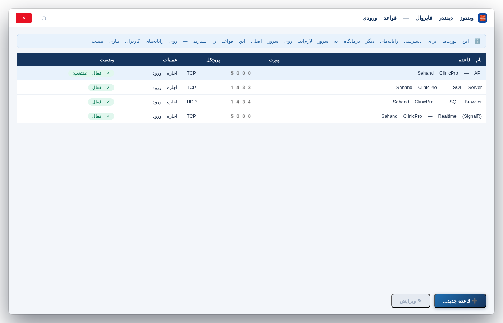
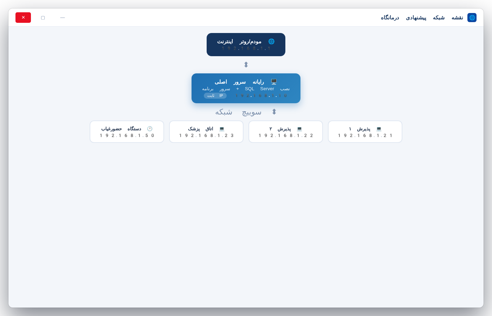

این راهنما طوری نوشته شده که حتی اگر تا امروز هیچ نرمافزاری نصب نکرده باشید، بتوانید با آرامش قدمبهقدم پیش بروید. هر جا باید روی چیزی کلیک کنید، نام دقیق همان دکمه را داخل کادر خاکستری آوردهایم؛ مثل این: Next. هر جا لازم باشد بدانید چه چیزی قرار است روی صفحه ظاهر شود، کادر بنفش «چه انتظاری داشته باشید» گذاشتهایم.
۱) سه لایه داریم: «سرور» یعنی رایانهای که انبار اطلاعات شماست (مثل دفترچه مرکزی). «کلاینت» یعنی رایانهای که کاربران با آن کار میکنند (پذیرش، اتاق پزشک و…). «سرور لایسنس» یعنی یک وبسایت کوچک روی اینترنت که اجازه کار برنامه را کنترل میکند — آن را فروشنده (سهند سرویس) برایتان آماده میکند.
۲) ترتیب مهم است: اول سرور، بعد کلاینتها. اگر جا بپرید، برنامه پیام خطا میدهد — نگران نباشید، در جدول رفع اشکال انتهای همین راهنما همه خطاهای رایج و راهحلشان هست.
۳) هیچوقت با دکمه Power خاموش نکنید: مخصوصاً رایانه سرور را همیشه از منوی Start → Power → Shut down خاموش کنید تا اطلاعات آسیب نبیند. توصیه میکنیم سرور را اصلاً خاموش نکنید و فقط صفحهنمایشش را ببندید.
| # | وسیله | توضیح به زبان ساده | الزام |
|---|---|---|---|
| ۱ | یک رایانه نسبتاً خوب برای «سرور» | حداقل: پردازنده Core i3 نسل ۷ به بالا، رم ۸ گیگابایت، هارد ۲۵۶ گیگابایت آزاد. لازم نیست صفحهنمایش بزرگی داشته باشد. | الزامی |
| ۲ | رایانه برای هر کاربر | هر پذیرش/اتاق پزشک یک رایانه — حتی لپتاپ معمولی کافی است (رم ۴ گیگ به بالا). | الزامی |
| ۳ | کابل شبکه یا وایفای پایدار | رایانهها باید به یک مودم/روتر واحد وصل باشند. کابل شبکه (LAN) همیشه مطمئنتر از وایفای است. | الزامی |
| ۴ | ویندوز ۱۰ یا ۱۱ (۶۴ بیتی) | روی همه رایانهها — هر نسخهای حتی Home کافی است. | الزامی |
| ۵ | چاپگر لیزری یا حرارتی | برای چاپ فاکتور و نسخه — مدل A4 یا رول ۸۰ میلیمتر. | پیشنهادی |
| ۶ | کارتخوان (پینپد) بانکی | برای ثبت پرداختهای کارتی در صندوق برنامه. | پیشنهادی |
| ۷ | دستگاه حضور و غیاب اثرانگشت | مدلهای سازگار: ZKTeco (مثل K40) یا Hikvision — با کابل شبکه به مودم وصل میشود. | اختیاری |
About your PC و Enter) برای پشتیبانی بفرستید تا راهنماییتان کنیم.| رایانه | چه چیزی نصب میشود؟ | چرا؟ |
|---|---|---|
| سرور (رایانه مرکزی) | ① SQL Server (انبان اطلاعات) ② سرور برنامه (API) ③ خود نرمافزار برای تست | همه اطلاعات اینجا ذخیره میشود؛ بقیه رایانهها از اینجا میخوانند. |
| کلاینتها (پذیرش و اتاقها) | فقط خود نرمافزار درمانگاه | سبک و سریع است؛ نصبش ۲ دقیقه طول میکشد. |
| سرور لایسنس (روی اینترنت) | هیچچیز — این بخش توسط سهند سرویس روی هاست شما نصب میشود | مثل یک قفل مرکزی که اجازه کار برنامه را میدهد. |
SQL Server همان «دفترچه مرکزی» است که همه اطلاعات درمانگاه در آن نوشته میشود. فقط روی رایانه سرور نصب میشود — روی رایانههای کاربران نصب نکنید.
در مرورگر (Chrome یا Edge) این نشانی را باز کنید و دکمه Download now را بزنید:
https://www.microsoft.com/en-us/download/details.aspx?id=104781 (جستجوی گوگل: SQL Server 2022 Express download)
فایل دانلودشده معمولاً به نام SQLServer2022-SSEI-Expr.exe است. روی آن دوبار کلیک کنید. اگر پنجرهی «User Account Control» آمد و پرسید اجازه تغییر بدهم؟، روی Yes کلیک کنید.
روی Accept و بعد Install کلیک کنید و صبر کنید. یک چای بخورید ☕ — این مرحله ۳ تا ۸ دقیقه طول میکشد.
وقتی تمام شد، صفحهای مثل تصویر زیر میبینید. از قسمت Connection string متن کنار Data Source= را یادداشت کنید (معمولاً localhost\SQLEXPRESS است) — بعداً لازمش داریم.

بسته نصب را از لینک رلیز گیتهاب دانلود کنید: SahandClinicPro-Setup-v1.6.0.zip را باز کنید و روی رایانه سرور، پوشه server را داخل C:\SahandClinicPro کپی کنید. روی فایل Sahand.ClinicPro.API.exe دوبار کلیک کنید.
Now listening on: http://0.0.0.0:5000 — یعنی سرور با موفقیت روشن شده. این پنجره سیاه را نبندید! همانطور باز بمانید. اگر Firewall ویندوز پرسید، Allow access را بزنید.
برای اینکه این سرور هر وقت ویندوز بالا آمد خودکار روشن شود، از منوی Start تایپ کنید Task Scheduler و یک وظیفه جدید بسازید که Sahand.ClinicPro.API.exe را هنگام روشنشدن ویندوز اجرا کند (در نسخه بعدی، نصبکننده خودکار این کار را میکند).
روی هر رایانه کاربر، فایل نصب SahandClinicPro-Setup.exe را (از همان ZIP) اجرا کنید. اگر پیام ویندوز SmartScreen آمد، روی More info و بعد Run anyway کلیک کنید — این پیام فقط برای نرمافزارهای جدید و شناختهنشده نمایش داده میشود و جای نگرانی نیست.
در پنجره نصب، پوشه پیشفرض (C:\Program Files\Sahand ClinicPro) را قبول کنید و Next → Install → Finish بزنید. آیکون برنامه روی دسکتاپ ظاهر میشود.
اولین بار که برنامه را باز کنید، صفحه ورود مثل تصویر زیر میآید. اگر پیام «اتصال به سرور برقرار نشد» گرفتید، هنوز تنظیمات شبکه (قدم ۵) را انجام ندادهاید — اشکالی ندارد؛ بعد از قدم ۵ درست میشود.

کلید لایسنس را از سهند سرویس گرفتهاید (قالبش اینطور است: SCPRO-XXXXX-XXXXX-XXXXX). وارد برنامه شوید و از منوی راست، روی لایسنس کلیک کنید.
کلید را در کادر «کلید لایسنس» تایپ کنید (کپیپیست بهتر است) و دکمه 🔑 فعالسازی آنلاین را بزنید. باید اینترنت وصل باشد.

.lic بگیرید و با دکمه 📤 بارگذاری فایل لایسنس (.lic) فعال کنید — نتیجه یکی است.هدف این قدم: رایانههای کاربران بتوانند به رایانه سرور «بروازند». دو کار کوچک لازم است: (الف) به سرور یک نشانی ثابت بدهیم، (ب) در فایروال سرور راه را باز کنیم.
روی رایانه سرور: از منوی Start روی آیکون شبکه (کنار ساعت) راستکلیک → Open Network & Internet settings → روی Change adapter options کلیک کنید.
روی اتصال فعال (Ethernet یا Wi-Fi) دوبار کلیک → Properties → روی Internet Protocol Version 4 (TCP/IPv4) دوبار کلیک کنید.
گزینه Use the following IP address را انتخاب و این مقادیر را بنویسید:
IP address: 192.168.1.10 Subnet mask: 255.255.255.0 Default gateway: 192.168.1.1 Preferred DNS: 192.168.1.1
سه بار OK بزنید. (اگر مودم شما شبکه دیگری میدهد — مثلاً ۱۹۲.۱۶۸.۰ — فقط بخش آخر نشانی سرور را ۱۰ بگذارید؛ مثل 192.168.0.10)
از منوی Start تایپ کنید Windows Defender Firewall → از چپ Advanced settings → از چپ Inbound Rules → از راست New Rule…
سه بار این مراحل را (برای هر پورت یکبار) تکرار کنید: Port → TCP → شماره پورت را بنویسید (5000 و بعد 1433) → Allow the connection → هر سه تیک را بزنید → نام بگذارید مثل Sahand API → Finish. یکبار هم برای UDP پورت 1434.

روی هر رایانه کاربر، در فایل پیکربندی برنامه (منوی تنظیمات → اتصال سرور) نشانی سرور را بهجای localhost بنویسید: http://192.168.1.10:5000 — دقیقاً همان نشانیای که در بخش الف به سرور دادید.
برنامه را ببندید و دوباره باز کنید. حالا باید صفحه ورود بدون خطا بیاید و نام سرور در نوار پایین برنامه سبز باشد. تبریک! 🎉 شبکه شما آماده است.

دستگاه را با کابل شبکه به مودم وصل کنید و طبق دفترچه دستگاه، به آن نشانی ثابت بدهید (مثلاً 192.168.1.50).
در برنامه به منوی حضور و غیاب → تب مدیریت دستگاهها → دکمه ➕ افزودن دستگاه و نشانی و پورت دستگاه را وارد کنید (ZKTeco پیشفرض ۴۳۷۰، Hikvision پیشفرض ۸۰).
روی 🔌 تست اتصال کلیک کنید — سبز شد؟ تمام! از این لحظه هر ضربهی اثرانگشت خودکار داخل برنامه میآید.

منوی بکاپ و بازیابی → قسمت زمانبندی → گزینه «روزانه ساعت ۰۳:۰۰ بامداد» را فعال کنید و پوشه مقصد را یک درایو دیگر (مثلاً فلش یا هارد اکسترنال E:) انتخاب کنید.
| پیام/مشکل | یعنی چه؟ | خودم چه کنم؟ |
|---|---|---|
| اتصال به سرور برقرار نشد | کلاینت رایانه سرور را پیدا نکرده | ① سرور روشن است؟ ② نشانی http://192.168.1.10:5000 را در مرورگر کلاینت باز کنید — اگر صفحه Swagger آمد مشکل از تنظیم برنامه است، اگر نیامد از شبکه/فایروال است (قدم ۵ را بازبینی کنید) |
| Server not found / نمیتواند SQL را پیدا کند | SQL Server خاموش یا نامش متفاوت است | روی سرور از منوی Start تایپ کنید Services و سرویس SQL Server (SQLEXPRESS) را پیدا و Start کنید |
| login failed for user 'sa' | رمز دیتابیس اشتباه است | رمزی که هنگام نصب SQL گذاشتید را از مدیریت تنظیمات برنامه دوباره وارد کنید |
| لایسنس فعال نشد / تایماوت | اینترنت قطعی است یا سرور لایسنس در دسترس نیست | اینترنت را چک کنید؛ ۲ دقیقه صبر و دوباره تلاش کنید؛ نشد → از پشتیبانی فایل آفلاین .lic بگیرید |
| صف زنده کار نمیکند (فراخوان روی رایانه دیگر نمیآید) | پورت ۵۰۰۰ در فایروال سرور باز نیست | قدم ۵ بخش ب را دقیقتر اجرا کنید؛ همه قواعد باید «سبز/اجازه» باشند |
| دستگاه حضورغیاب وصل نمیشود | نشانی یا پورت دستگاه اشتباه است | با مرورگر نشانی دستگاه را باز کنید (http://192.168.1.50) — اگر صفحه دستگاه آمد، پورت را در برنامه چک کنید |
| برنامه روی یک کلاینت کند است | وایفای ضعیف یا آنتیویروس سنگین | کابل شبکه بزنید؛ آنتیویروس را روی حالت متعادل بگذارید و پوشه برنامه را Exclude کنید |
| پیام SmartScreen موقع نصب | ویندوز نرمافزار جدید را نمیشناسد | طبیعی است — More info → Run anyway |
| ✓ | بررسی | چطور مطمئن شوم؟ |
|---|---|---|
| ☐ | سرور روشن است | پنجره سیاه کنسول باز است و Now listening مینویسد |
| ☐ | همه کلاینتها وصلاند | روی هر رایانه، صفحه ورود بدون خطا باز میشود |
| ☐ | لایسنس فعال است | صفحه لایسنس: کارت سبز «فعال» + کارت پشتیبانی نمایان |
| ☐ | صف زنده کار میکند | از رایانه پذیرش یک بیمار فراخوان کنید — روی رایانه دیگر همان لحظه ظاهر شود |
| ☐ | پشتیبانگیری خودکار روشن است | منوی بکاپ: زمانبندی فعال + حداقل یک فایل بکاپ در پوشه مقصد |
| ☐ | رمز admin عوض شده | اولین ورود: منوی کاربران → تغییر رمز |
| ☐ | چاپگر تنظیم شده | یک فاکتور آزمایشی چاپ کنید |
هر جا گیر کردید، همین کارها را بکنید: ① یک عکس از پیام خطا بگیرید ② بنویسید در چه صفحهای بودید ③ تماس بگیرید یا پیام بدهید — در ساعات کاری معمولاً همان لحظه پاسخ میگیرید.